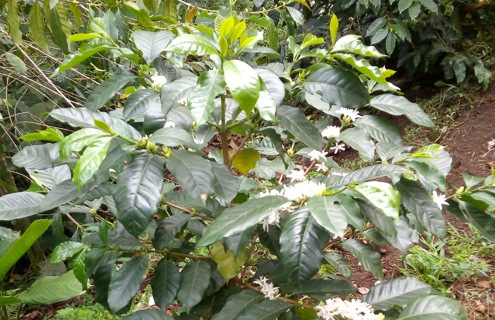

Hemos tenido la experiencia que cultivando el cafe de la variedad de catimor a sido una de las mejores opciones del cultivo aqui en nuestra localidad.
Años atras la localidad era un productor de cafe,pero llego la tempora de roya y extermino los cultivos con la que contaba la localidad; es asi como una empresa de cafe mugo vio una oprtunidad de iniciar trabajos para reiniciar el cutivo en coordinacion con los productores de cafe,esta empresa facilito plantas de cafe, quimicos,maquinas despulpadoras y piso firme para el secado, y tambien efectivos para reconecer los trabajos de mano de obra,al principio era una actividad donde la empresa tenia la intencion de recuperar su inversion a largo plazo,pero despues se llego a un convenio con dependencias de gobierno(SAGARPA)y desde ese momento la empresa cafe musgo se olvido de recuperar su inversion con los productores de cafe,aun asi la empresa apoyaba con apoyo tecnico para el manejo y cuidado del cafe catimor.Actualmente los productores estan muy motivados con la iniciativa que se llevo en aquellos tiempos ya que estan obteniendo una excelente cosecha.
Si tienes dudas dejanos tus comentarios y en cuanto podamos con gusto responderemos tus inquietudes.